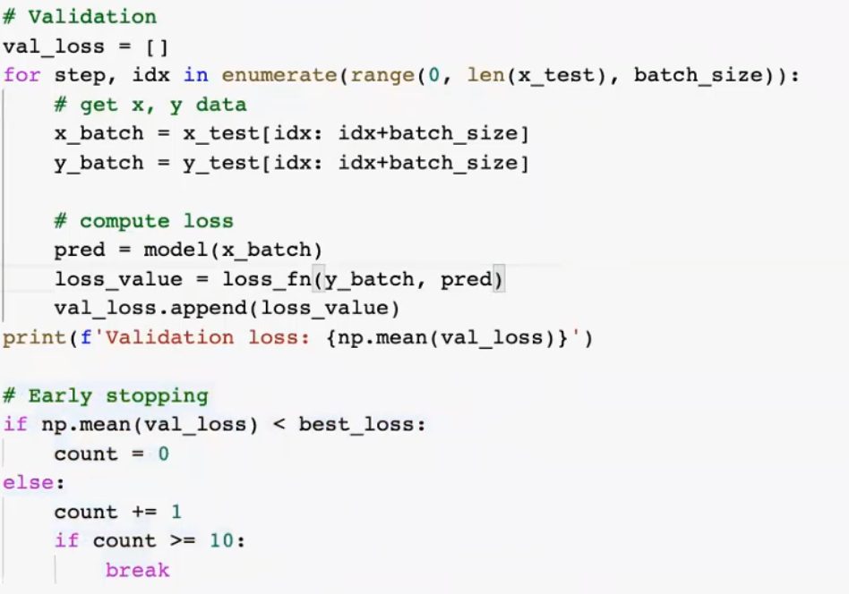

Keras
graph TB
k[keras]-->tensorflow
k-->CNTK
k-->theano
模型
flowchart LR
x[X]--Wi-->Zi-->Y
梯度下降
每次往微分最小方向走一步
find min of f(x)
Lost function
: true value
: prediction
Mean square error
Mean Absolute Error
Binary Cross Entropy (評估二元分類)
分類
正規化
graph LR
z[z]-->s[softmax]-->y
Multi-class
考慮n維uni cube
Lost function
Categorical cross function
捲積
對應位置用卷積核當係數線性組合
tf.keras.layers.Conv2D(
filters, kernel_size, strides=(1, 1), padding='valid', data_format=None,
dilation_rate=(1, 1), activation=None, use_bias=True,
kernel_initializer='glorot_uniform', bias_initializer='zeros',
kernel_regularizer=None, bias_regularizer=None, activity_regularizer=None,
kernel_constraint=None, bias_constraint=None, **kwargs
)
三劍客
convolution
Batch Normalisation
 ### ReLU {#relu }
$$
f(x)=\left\{
\begin{array}{l}
&0 \ \ (x<0)\\
&x \ \ (x\geq 0)
\end{array}\right.
$$
### example {#example }
### ReLU {#relu }
$$
f(x)=\left\{
\begin{array}{l}
&0 \ \ (x<0)\\
&x \ \ (x\geq 0)
\end{array}\right.
$$
### example {#example }
def conv_bn(x, filters):
x = tf.keras.layers.Conv2D(filters=filters,Kernel_size=3, padding='same')(x)
x = layers.BatchNormalization()(x)
x = layers.ReLU()(x)
實作
import tensorflow as tf
from tensorflow.keras import datasets, models, layers, utils, activations, losses, optimizers, metrics
import numpy as np
import matplotlib.pyplot as plt
import cv2
import os
from glob import glob
from tqdm import tqdm
from sklearn.model_selection import train_test_split
import pandas as pd
遷移學習
# Method 1
# clear graph
tf.keras.backend.clear_session()
#base_model
base_model = tf.keras.applications.EfficientNetB0(include_top=False,
weights='imagenet', # None
input_shape=(IMG_SIZE, IMG_SIZE, 3)
)
x = base_model.output
# Classifier
x = layers.GlobalAveragePooling2D()(x)
x = layers.Dense(256, activation='relu')(x)
x = layers.Dropout(0.3)(x)
x = layers.Dense(256, activation='relu')(x)
x = layers.Dropout(0.3)(x)
x = layers.Dense(256, activation='relu')(x)
x = layers.Dropout(0.3)(x)
predictions = layers.Dense(3, activation='softmax')(x)
# Freeze
for l in base_model.layers:
l.trainable = False
#建構模型
model = models.Model(base_model.input, predictions)
model.summary()
#編譯模型
model.compile(optimizer='adam',
loss=losses.categorical_crossentropy,
metrics=[metrics.categorical_accuracy])
#訓練
logs = model.fit(x_train, y_train,
batch_size=30,
epochs=30,
validation_data=(x_val, y_val))
Callback & Save

手刻 Early stopping
資料擴增(Data Augmentation)
Imgaug
Detail
https://github.com/aleju/imgaug
Data Generator
省內存
https://www.tensorflow.org/api_docs/python/tf/keras/utils/Sequence
繼承utils.Sequence，需要實作
- def __len__: number of batches per epoch
- def __getitem__(idx): get the idx-th batch
- def __on_epoch_end__: called at the end of epoch
class DataGenerator(utils.Sequence):
def __init__(self, paths, batch_size, img_size, mode='train'):
self.paths = paths
self.batch_size = batch_size
self.mode = mode
self.img_size = img_size
self.shuffle = mode == 'train' #打亂
self.idxs = np.arange(len(self.paths)) # [0, 1, 2, ..., len(self.paths)-1]
self.all_class = ['normal', 'bacteria', 'virus']
self.class_map = {cls: i for i, cls in enumerate(all_class)}#類別to num
self.num_classes = len(self.class_map)
self.on_epoch_end()#洗牌
# augmentation
# self.aug = imgaug....
def __len__(self): #讀完幾批是一個epoch
'number of batches per epoch'
return int(np.ceil(len(self.paths) / self.batch_size))
def __getitem__(self, batch_index):#取資料
# Generate idxs of the batch
idxs = self.idxs[batch_index*self.batch_size: (batch_index+1)*self.batch_size]
# Find list of IDs
batch_paths = [self.paths[i] for i in idxs]
# Generate data
return self.__data_generation(batch_paths)
def on_epoch_end(self):#洗牌
if self.shuffle:
np.random.shuffle(self.idxs)
def __data_generation(self, paths):#準備資料
"""
Generates data containing batch_size samples
"""
x = np.empty((len(paths), self.img_size, self.img_size, 3), dtype=np.float32)
y = np.empty((len(paths)))
for i, path in enumerate(paths):
img = cv2.imread(path)[:, :, ::-1]
# img preprocess
img = cv2.resize(img, (self.img_size, self.img_size))
# # TODO: Data Augmentation
# if self.mode == 'train':
# img = self.aug.augment_image(img)
# Preprocess
img = img / 255.
# img = tf.keras.applications.efficientnet.preprocess_input(img)
x[i] = img
if self.mode != 'test':
# read class label
cls = path.split(os.sep)[-2].lower()
if cls == 'pneumonia':
# get filename
filename = path.split(os.sep)[-1]
# get pneumonia subclass
cls_pneumonia = filename.split('_')[1]
cls_idx = class_map[cls_pneumonia]
# for normal class
else:
cls_idx = class_map[cls]
y[i] = cls_idx#y紀錄train 的類別ID
if self.mode != 'test':
# one-hot encoding
y = tf.keras.utils.to_categorical(y, num_classes=self.num_classes)
return x, y
else:
return x
處理資料
IMG_SIZE = 256
BATCH_SIZE = 64
all_class = ['normal', 'bacteria', 'virus']
# 'normal':0, 'bacteria': 1, 'virus':2
gen_train = DataGenerator(img_paths_train, BATCH_SIZE, IMG_SIZE, mode='train')
gen_val = DataGenerator(img_paths_val, BATCH_SIZE, IMG_SIZE, mode='val')
gen_test = DataGenerator(img_paths_test, BATCH_SIZE, IMG_SIZE, mode='test')
# def __len__(): batches per opech
len(gen_train), len(gen_val)
# get 1 batch
# def __getitem__(self, batch_idx)
imgs, labels = gen_train[0]
fit model
model.fit(gen_train,
validation_data=gen_val,
epochs=10)
Prediction
predictions = model.predict(gen_test)
影像分割
 放大方法: 特徵融合，擷取各層
放大方法: 特徵融合，擷取各層
放大
- Upsampling 一模一樣
- transposed convolution


即時影像偵測\
YOLO v1
Step 1
49 格，分類
Step 2
中心在某格裡面的物件

Step 3
根據中心位置給框框類別

Step 4
NMS (選出最有可能的方框框)

模型
最後7x7x30
前10:兩格框
後20:類別
Loss function
Label
中文路徑gg
ssssss